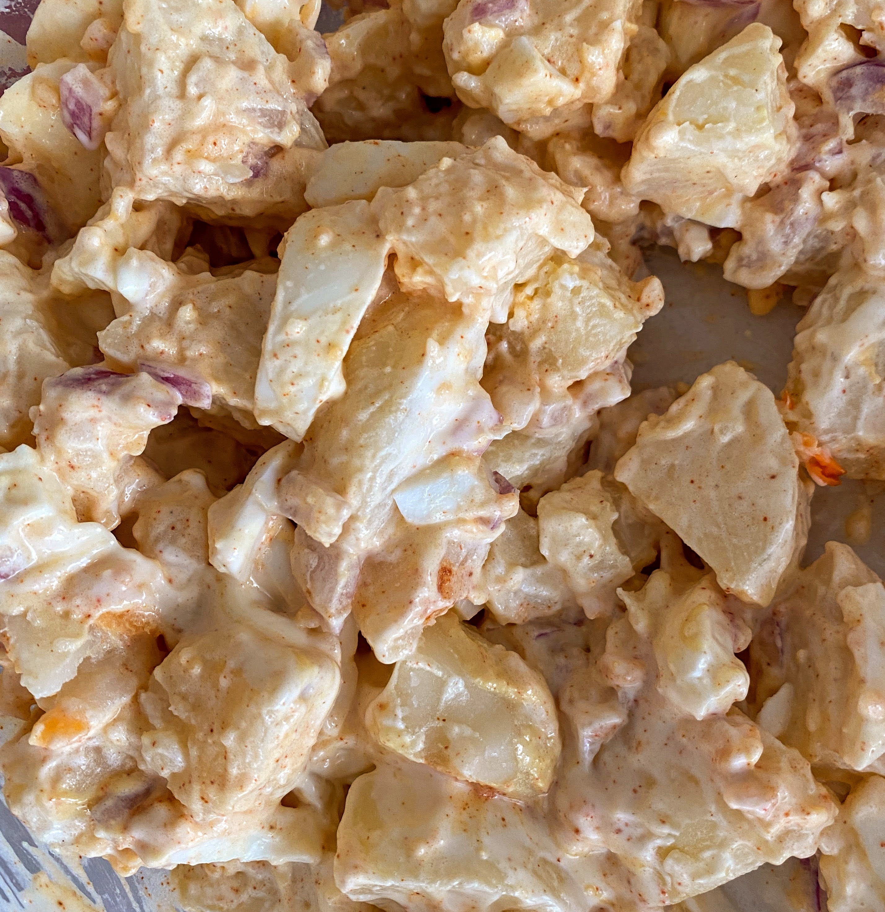

Creamy Potato Salad
 Meat
Meat

1.5kgpotatoes
Boil potatoes for 12-15mins
Drain and leave to cool
1 cupmayonnaise1 smallred onion1 tbspdijon mustard1 tbsplemon juice1/2 cuppaprika
Combine mayonnaise, red onion, dijon mustard, lemon juice and paprika
4eggs
Stir through potatoes and chopped hard boiled eggs
someshallots
Sprinkle shallots over the top of mixture